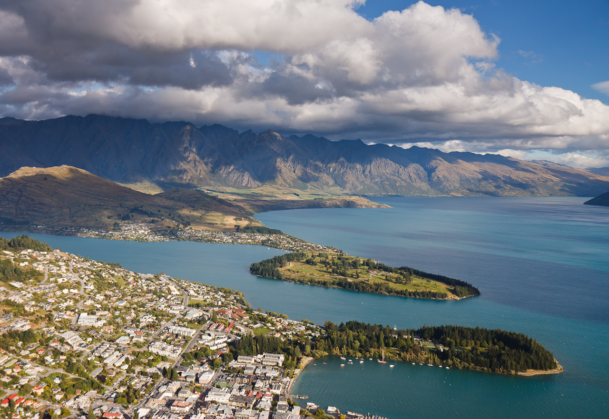

旅行计划
-
日程
2012年4月26日到2012年5月6日
-
地点
新西兰南岛，中部
-
人员
We！
为什么只去南岛？
-
时间不够
北岛都是折线游的
正常南岛环岛游一般是15~25天比较合适
-
南岛特色
山区、冰川、峡湾
选择南岛是有所考量的，新西兰大体是个现代文明入侵历史不长的国家，人文不会是重点。
国家地理推荐新西兰是最适合旅行的国家，大部分自然风光集中在南岛，所以选择这个被新西兰北岛人民认为荒凉的地方也是情理之中的事情了

第一天：4月26日
首都机场T3起飞
************已定************
出发：4月26日(星期四) 11:50(北京)
航班：NZ0286
到达：4月27日(星期五) 04:45 (奥克兰)
如果能有合适的新西兰航空的也很好，这样可以在基督城入关
第二天：4月27日
到达奥克兰，飞基督城，住Lake Tekapo
-
************待定************
出发：4月26日(星期五) 09:30(奥克兰)
航班JQ 245
到达：4月27日(星期五) 10:50（基督城）
-
租车
-
超市采购
-
驾车基督城到Tekapo
225 km – about 3 hours 2 mins
-
Lake Tekapo
第一时间去教堂、晚上观星，清晨观湖
搭乘经过修复的古老蒸气船在瓦卡蒂普湖上巡航，是欣赏壮丽的高山景色的最好方式。
瓦卡蒂普湖（Lake Wakatipu）形如闪电，是新西兰第三大湖泊。达特河（Dart River）位于从湖的北端，湖水从那流入；卡威劳河（Kawarau River）起源于皇后镇，湖水从这流出。 由于剧烈的冰川运动，形成了现在的瓦卡蒂普湖，其四周环山。其中以厄恩斯洛山最高，海拔2819米。湖区周围的城镇有皇后镇（Queenstown）、金斯顿村（villages of Kingston）、格林诺奇（Glenorchy）和金洛克（Kinloch）。 由于瓦卡蒂普湖形状独特，湖面因此形成了独特“潮汐”现象（更准确地说，是一个大型的湖震或“驻波”），水面每隔25分钟就上升和下降约10厘米。跟据毛利人的传说，这是因为在湖底长眠了一个名叫默特乌（Matau）的水怪，正是它的心跳导致湖面“潮涨潮落”的现象。 T.S.S.厄恩斯洛号（T.S.S. Earnslaw）每天一班，游客在上面游览湖泊风景。T.S.S.厄恩斯洛号的烟囱为亮红色，高12米；而船身则呈白色，配备宽敞的杉木甲板。这艘古老的蒸汽船已成为新西兰的象征。 一年四季，游客都可以在瓦卡蒂普湖钓鱼。尤其是绿石河（Greenstone River）和洛奇河（Lochy River）的河口，那儿鲑鱼数量庞大，一定让你不虚此行。而在夏季，这里可是游泳避暑的圣地，深受游客欢迎。

第三天：4月28日
住Lake Tekapo，游Cook山
cook山可以称之为南岛的地标
库克山国家公园（Aoraki Mount Cook National Park）内有大洋洲地区的最高峰（库克山——3755 米）。该地区吸引了众多登山者、徒步旅行者和热爱自然风景的人们纷至沓来。直升机滑雪、直升机徒步旅行和空中观光将让游客一生难忘。库克山村庄内或附近是多条步行道的起始点；大多数步道只需几小时便可行完全程。当地酒店的酒吧中，巨大的窗户外是库克山的完美风景，美景与佳酿融为一体——将让你此行毕生难忘。
-
Mt John
天文台
-
驾车到Mt Cook
81.5 km – about 56 mins
-
库克山步道
Hooker Valley Track
-
夜宿Lake Tekapo
第四天：4月29日
从Tekapo出发，到皇后镇
最热门的旅游景点
高山度假胜地皇后镇拥有迷人而奇特的壮丽景观，让人兴奋不已。这也是尝试蹦极、喷射快艇、骑马、漂流和河流冲浪等各种冒险活动的好地方。还是提供各种奢华体验、美酒佳肴、水疗和休闲高尔夫的完美度假胜地。
-
驾车到Queenstown
-
途经Arrowtown
-
Queenstown
Lake Wakatipu
缆车skyline
特色汉堡
-
夜宿Queenstown

第五天：4月30日
从皇后镇出发，到Milford Sound湾
沿途最美的公路，世界八大奇迹
通往米尔福德的公路是新西兰国内最美丽的观景公路之一。公路行经相对柔和的农田之后，将进入峡湾国家公园入口附近茂密的山毛榉森林。请留心寻找“山峰渐渐消失的道路”（Avenue of the Disappearing Mountain）和美丽的镜湖（Mirror Lakes）。粗犷的霍默隧道（Homer Tunnel）将带你进入米尔福德峡湾（Milford Sound）——高耸的麦特尔峰（Mitre Peak）下 22 公里长的峡湾。
每当下雨的时候，米尔福德峡湾就会出现许多“暂时的瀑布”，这些瀑布从峭壁表面倾泻而下，有的长达1000米。最令人津津乐道的特色包括一泻千里的瀑布、郁郁葱葱的雨林、令人震撼的景色以及仿佛永远也不会停止的降雨。新西兰的这个地区每年的降水量可达5米左右，因此经常会遇到下雨天（住宿用的简易小屋内装有煤气供暖并干燥房间）。
-
驾车到Milford Sound
286 km – about 3 hours 28 mins
游船
-
夜宿Te Anau
萤火虫

第六天：5月1日
从Te Anau出发，到Glenorchy/Paradise，宿Wanaka
-
Te Anau to Queenstown
286 km – about 3 hours 28 mins
-
Queenstown to Glenorchy
46 km/大约 0.75 hour
沿瓦卡蒂普湖（Lake Wakatipu）一路前行至格林诺奇（Glenorchy），一路上的风景美到极致。这里有多个野餐区，夏季里，还可停下游泳。4 月 6 月间，绚烂的秋季色彩令人眼花缭乱。
格林诺奇坐落在湖的前侧。这是一个风景如画的小村庄，设有博物馆、高尔夫球场以及各类住宿和餐馆。格林诺奇常被视为路特本步行道（Routeburn Track）的起点。该区还有众多其它绝佳的步行地点，包括里斯（Rees）和达特（Dart）河谷。如想体验精彩刺激的活动，可以试试达特河上的喷射快艇或皮艇。
-
Queenstown to Wanaka
前往瓦纳卡最快捷的路线是沿王冠山脉公路前行。这段路路况不佳，对驾驶技术要求颇高，但风景绝好，还可能偶遇友好的啄羊鹦鹉（山地鹦鹉）。较保守的司机会选择沿沙特欧瓦河、邓斯坦湖和克鲁萨河前进的路线。沿途吉布斯顿地区的葡萄园美景和卡瓦劳河大桥的蹦极跳活动将令你乐趣无穷。
由于一万年前的冰川运动，形成了瓦纳卡湖和哈威亚湖（Lakes Wanaka and Hawea）。两湖相邻而坐，仅有一处名叫The Neck爪哇之地将两湖隔离。The Neck只有1000米宽，冰川就是在那一分为二。 瓦纳卡湖是新西兰最大的河流——克鲁萨河（the Clutha）的源头。哈威亚湖流入哈威亚河，在艾伯特镇（Albert Town）与克鲁萨河汇合。 两片湖泊的沙滩上铺满了卵石，在那里你可以欣赏四周美丽的山峰。同时，你也可以在这里享受各种探险活动，尤其是在炎炎夏日，这里更是一个非常不错的度假场所。 瓦纳卡湖南端有一圈圈的环山公路。如果你对地质感兴趣的话，攀登铁山（Mount Iron）应该是一个不错的选择。远古冰川作用至今仍在山体留下深深的烙印——山上平坦，山下则陡峭崎岖。 从哈威亚湖镇出发，沿着蒂马鲁河路（Timaru River Road）一直走，最后来到蒂马鲁溪（Timaru Creek），那里是一个野餐和露营区。而从这营地出发再往前走，穿过越山灌木丛林的山谷，展现在你面前的则是蜿蜒的河床。
第七天：5月2日
Wanaka to Fox Glacier
南岛的湖区中，瓦纳卡宛如一名腼腆的少女，将她的美丽隐藏在瓦纳卡湖和哈威亚湖(Lake Hawea)以及南阿尔卑斯山之间，等待着富有好奇心的游客将她发现。
冬季是瓦纳卡最热闹的季节，全世界的滑雪爱好者蜂拥而至来到这里，前往卡德罗纳(Cardrona)和三锥山(Treble Cone)享受非凡的下坡滑雪、冰雪农场(Snow Farm) 的北欧式滑雪，当然还有最刺激的韩瑞斯山(Mt Harris)乘直升机滑雪。
当然，瓦纳卡绝不仅仅是一个冬季游乐场。这里的钓鱼、徒步、登山、跳伞等项目终年开放。从这里，你可以轻松前往皇后镇（Queenstown），克伦威尔（Cromwell）和亚历山德拉（Alexandra）进行购物、酒庄之旅，或只是找一个乡村风情的咖啡厅消磨时间，把现实世界抛在脑后。
-
可以从水路或岸边的远足步行道游览这些被群山环抱的冰河湖。
-
宿Fox Glacier
第八天：5月3日
Fox Glacier
福克斯（Fox）和弗朗兹约瑟夫冰川（Franz Josef Glacier）是冰河世纪末期存留下来的独一无二的珍贵遗产。被厚厚冰层覆盖的强劲河流冲击着被冰雪切割的岩石峡谷，带来绝美的冰川之景。纵观全球各地的同一海拔位置，如此靠近海洋的冰川绝无仅有。你可以在该地区参加各种冒险活动。
福克斯冰川的端面距接待游客的小镇仅 5 公里。通往步行道的公路穿过其早期运动和冰川后退而形成的古老的冰碛。福克斯冰川拥有 4 条高山冰川支流，以新西兰早期首相威廉福克斯（William Fox）的名字命名。
>驾车稍向北行即可到达弗朗兹约瑟夫冰川。人们从 1865 年开始探索弗朗兹约瑟夫冰川，自 1985 年起，人们发现冰川以每天 1 米的速度移动。而此前，它们完全呈后退状态。仅需 10 分钟，你就可以走到冰川的终点。弗朗兹约瑟夫镇可提供各种优良的住宿和餐馆。
-
一早游览Lake Matheson
-
冰川hiking
尽管世界上许多冰河都在逐渐缩小，福克斯冰河(Fox glacier)和弗兰茨约瑟夫冰河(Franz Josef glacier)却在仍在不断扩大，已接近海平面。当地的海拔高度较低，气候温暖湿润，为游览这些冰河提供了便利的环境，使之成为世界上最受青睐的冰河景观。游人可以轻松地步行至冰河脚下，穿过两侧峭壁林立的远古河谷，观看冰河经过数千年的进进退退，留下的大型凹痕。当您靠近冰河脚下的时候，其巍峨壮观的美景定将让您叹为观止。 下面向您介绍一些方便拍照取景的信息：福克斯冰河全长13公里，从南阿尔卑斯山（Southern Alps）2600米的高处倾斜而下。四条高山冰河每年都会累积大约30米深的积雪，并注入福克斯冰河。积雪在冰河顶部压缩成数百米深的蓝色冰雪，沿着山势向下滑落至下方的河谷，落在300米厚的冰层上。冰河与陡峭的峡谷土层之间的压力，促使一部分积雪融化，为这种运动提供了润滑的作用。再加上冰河顶部的大量积雪不断汇入冰河，使福克斯冰河和弗兰茨约瑟夫冰河的流速比大部分峡谷冰河快了十倍左右。 冰河下方的山谷斜坡引起了冰河表面的裂缝、隆起和深谷，形成了这壮观巍峨、令人胆寒的冰冻景观。地势较低的冰河表面不断融化，汇入岩石间的溪谷中，形成冰冷的河流，逐渐流入温带雨林中，进而汇入塔斯曼海(Tasman Sea)。 专业导游将带您深入冰雪世界，直升飞机或雪上飞机可以带您飞上冰河的源头。
第九天：5月4日
Fox Glacier to Greymouth
-
驾车到Punakaiki pancake rocks and blowholes
240 km – about 2 hours 58 mins
-
夜宿Greymouth
第十天：5月5日
Greymouth to Auther's Pass to Christchurch
FAQ
-
新西兰的插座、电压是？
新西兰电压是240伏，虽然比国内的220伏高了20伏，但不会有影响。
新西兰的插座都是扁的三相的，两相的插头插不了，你得从国内带个多用插座，到新西兰你一下子不容易买到。
-
天气怎样？
metservice
-
2012年3月25日起新西兰交规改变---转右让左
http://www.nzta.govt.nz/traffic/around-nz/road-user-rule.html
视频
http://v.youku.com/v_show/id_XMzU4ODQyNzE2.html
←
→
/
#